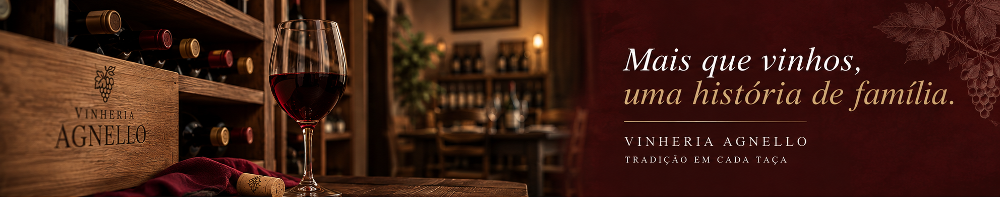
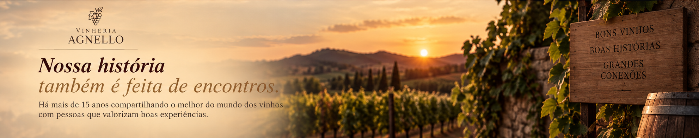

Quem Somos
A Vinheria Agnello é uma empresa familiar que iniciou suas atividades em São Paulo há mais de 15 anos. Desde então, buscamos oferecer aos nossos clientes uma grande variedade de vinhos nacionais e internacionais.
Mais do que oferecer diferentes rótulos, acreditamos que conhecer o vinho faz parte da experiência. Por isso, o atendimento sempre foi um dos principais diferenciais da Vinheria Agnello.

Nossa História
A Vinheria é administrada por Giulio Agnello e sua filha Bianca, que mantêm a tradição de um negócio familiar e próximo de seus clientes.
Durante muitos anos, nossas atividades ficaram concentradas em uma única loja física. Nesse espaço, nossos clientes podem conhecer diferentes rótulos e contar com a orientação de vendedores que entendem sobre vinhos e estão preparados para ajudar durante a escolha.
Com as mudanças nos hábitos de consumo e o crescimento das compras pela internet, surgiu um novo desafio: levar para o ambiente digital uma experiência próxima daquela encontrada em nossa loja física.
Nosso Atendimento
Escolher um vinho nem sempre é uma tarefa simples. Existem diferentes tipos de uvas, regiões, vinícolas e formas de produção que podem influenciar nas características de cada vinho.
Pensando nisso, nossos vendedores buscam entender o que cada cliente procura antes de indicar um rótulo. A escolha pode levar em consideração o gosto pessoal, o tipo de refeição, a ocasião ou até mesmo a vontade de experimentar algo diferente.
Essa troca de conhecimento faz parte da nossa história e é uma das características que buscamos preservar também em nossa experiência online.
Cuidado com Nossos Vinhos
O armazenamento também é uma parte importante do cuidado com os vinhos. Condições inadequadas de luz, temperatura e movimentação podem alterar características como aroma, sabor e coloração.
Por esse motivo, a Vinheria Agnello mantém cuidados especiais na conservação de seus produtos, principalmente com vinhos raros e de maior valor. Nosso objetivo é preservar as características de cada garrafa até o momento em que ela chega ao cliente.
A Experiência Agnello
Para nós, cada cliente pode ter uma relação diferente com o mundo dos vinhos. Alguns já possuem bastante conhecimento, enquanto outros estão começando agora e ainda têm dúvidas sobre qual vinho escolher.
É por isso que queremos unir tradição, conhecimento e atendimento para tornar a escolha de um vinho mais simples e agradável, seja em nossa loja física ou em nosso espaço online.
